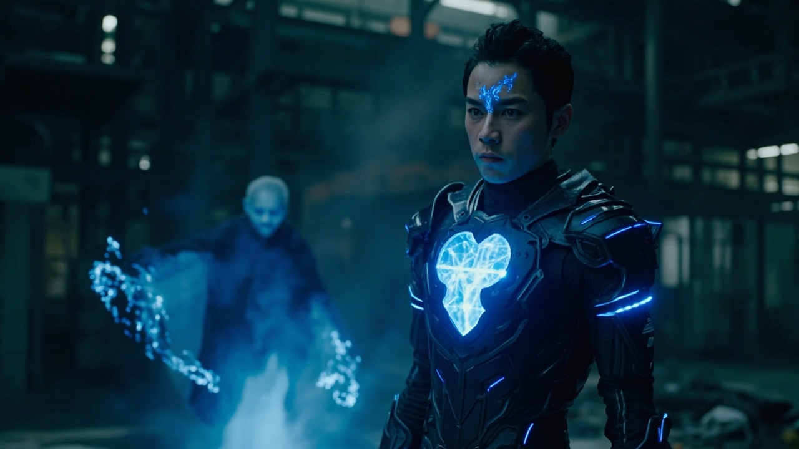
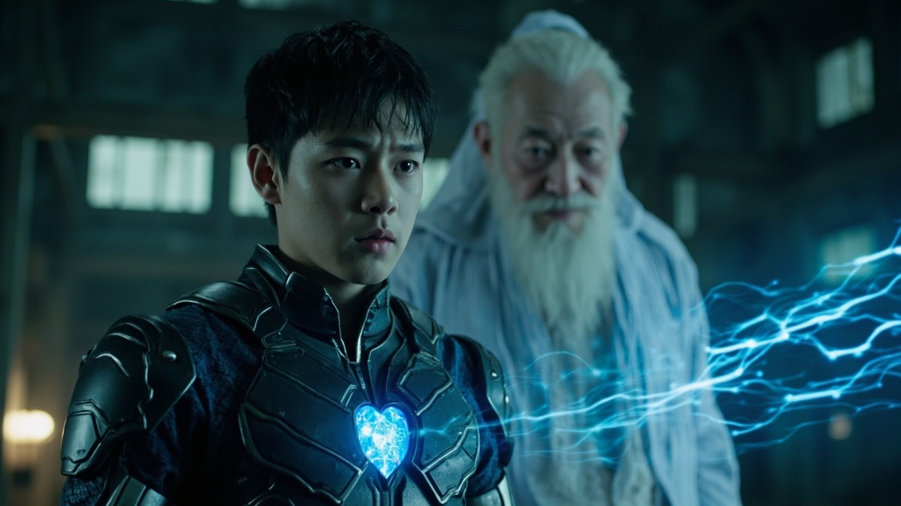
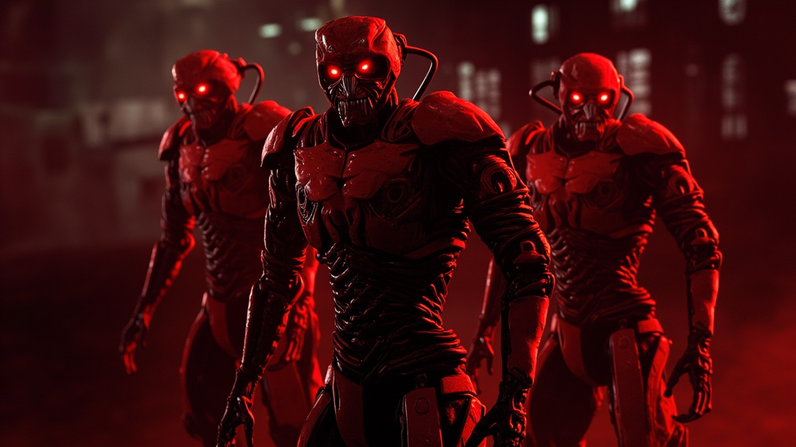
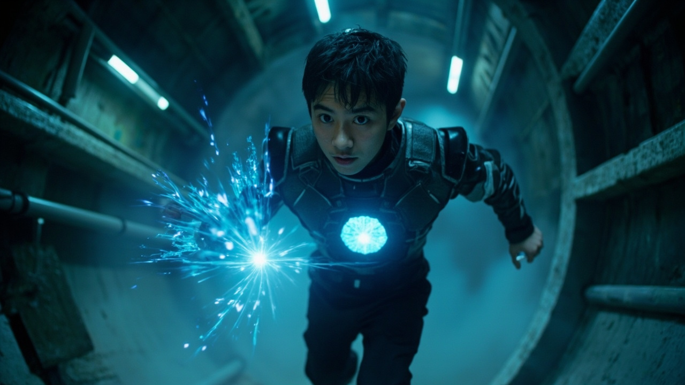
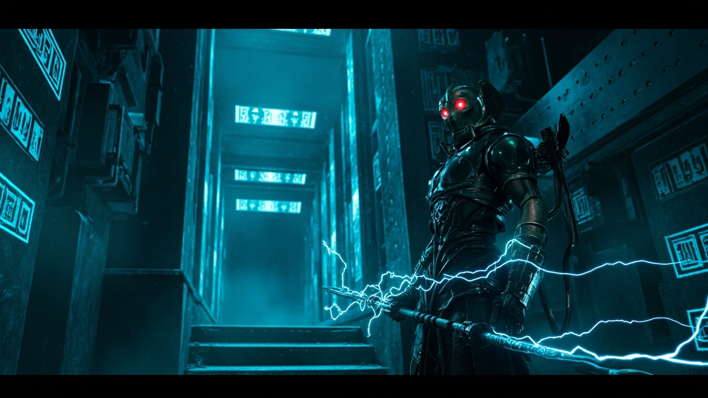

← 文字版
第62章
📚 目錄

第63章：傳承密鑰
🎧 點擊播放有聲朗讀
▶
播放有聲朗讀
場景一
廢棄工廠的秘密會面
空曠的廢棄工廠內，昏暗的光線從斑駁窗戶透入。一個散發�微光的透明老者向林塵訴說著數百年前的往事。老者飄渺的身影在空無一人的工廠中輕輕晃動，仿佛隨時會消散。林塵胸口的量子晶片劇烈震動，發出陣陣嗡鳴，與老者身上同源的氣息遙相呼應。末法時代最深層的秘密，即將揭曉。

場景二
火種計劃的真相
老者揭示了震撼的真相——「火種計劃」是末法時代來臨前，靈能開拓者們將文明的碎片與修真傳承以科技形式封存的偉大計劃。靈芯便是這個計劃的載體。老者將「鑰匙」傳授給林塵，裡面包含靈芯系統真正的權限，以及找到其他「火種」座標的可能。一道無法用言語形容的資訊洪流，伴隨著磅磗的古老靈氣，瞬間沒入林塵體內。

場景三
破序者包圍
「破序者」的追蹤波已經鎖定了這片區域。三台通體暗紅、由無數金屬部件扭曲組合而成的猙獰造物，正無聲地包圍過來。它們是秩序的守護者，也是時代的清道夫——本該在火種被完全激活後才啟動的防禦機制，卻因系統差錯而提前覺醒。紅色的獨眼掃描著工廠的每一寸空間，尖銳的嘯音划破寂靜。

場景四
地下逃亡
老者化作無數光點引開破序者，為林塵創造了逃跑的機會。林塵施展新獲得的【靈械通明】能力，周圍的廢棄機械彷彿活了過來——它們的靈氣殘留、金屬結構、微弱電流，都在林塵腦中清晰映現。他快速穿行於管道和廢棄設施之間，根據靈芯中新增的加密座標，來到一個看似普通的地下維護井。

場景五
哨兵阻路
井底是一面刻滿符文的青黑色金屬板。林塵按上去，運轉傳承中的獨特靈力頻率，金屬板無聲滑開，露出向下延伸的幽藍光芒通道。正當他準備踏入時，一個冰冷的電子音突然響起：「次級守護者『哨兵』啟動。驗證通過者，請說明來意。」一個纖細的金屬人形從陰影中浮現，手持流轉電弧的長矛，指向林塵。剛出虎穴，又入龍潭。